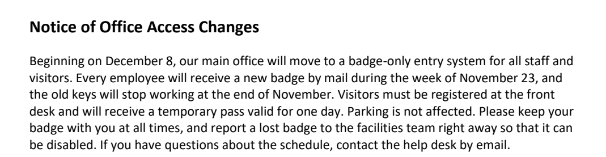
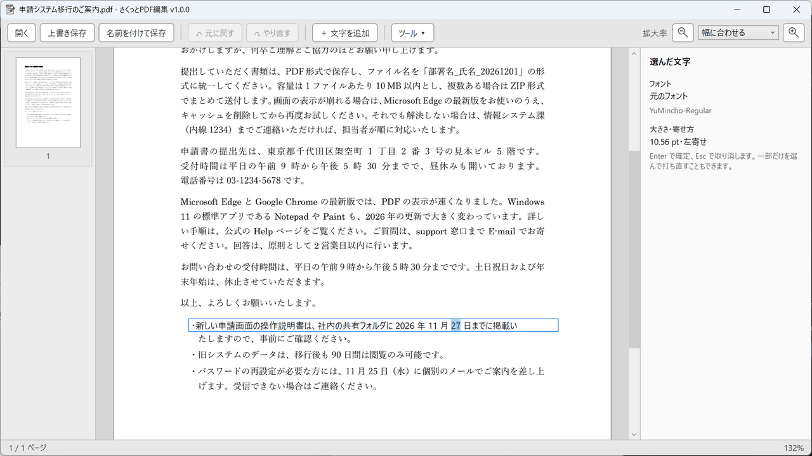
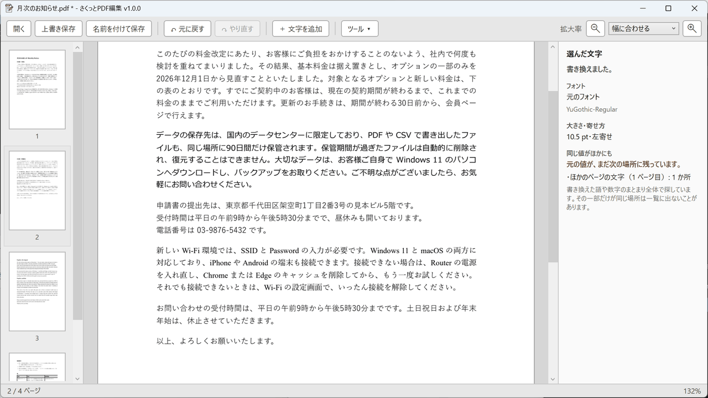

v1.0.0
- Released on the Microsoft Store (retype, add, move, delete and restyle text; paragraph rewrap; nine page tools)
Correct typos, update dates and names, refresh your templates. Retyped text uses the original font whenever it can, and every edit is checked so the old text doesn't linger in the file. Everything runs on your PC.


Both are the same PDF, before and after.
The sample is a fictional notice made for this page. Two dates were changed and a sentence was added with Sakutto PDF Editor 1.0.0, then the file was saved. The lines after the new sentence were rewrapped, and the paragraph kept its six lines. The app screens are under "How it works" below.
Buy it on the Microsoft Store and start right away. No sign-up for the app.
$25.49one-time
Get it from Microsoft Store See what it can doU.S. price. Prices vary by country; the Microsoft Store shows yours.
Screens show the Japanese interface. The app shows English when Windows is set to English.
FirstOpen a PDF
Click Open or drag a PDF onto the window. Page thumbnails appear on the left, the page in the middle, and the selected text's details on the right.

NextClick and fix
Click the text to select it, then click again to open an edit box in place. Retype, press Enter to confirm or Esc to cancel. Right-aligned numbers in a table keep their right edge.

ThenSave as a new file
Before you save, check for places you missed: if the old value (such as a phone number or a date) still appears on other pages, the right panel lists where. The first save always asks where to save, and suggests the original name plus "_edited" — so the original file stays as it is.

Don't have the file the PDF was made from? Fix the PDF itself.
Click on text and type the correction in place.
Edit a multi-line paragraph in one edit box.
Write anywhere on the page.
Move original text as well as text you added.
Restyle existing text, too.
Mistakes are easy to take back.
Never lose a document, never break it silently. These checks run on every edit and every save.
Every time you edit, the app checks that the old text is gone from the file and that other text hasn't moved.
If a check can't be completed, the edit isn't made and the reason appears in the right panel. Your document stays as it was.
If the old value (such as a phone number or a date) still appears on other pages, in comments or bookmarks, the app lists where — a quick check for places you missed.
The first save always asks where to save and suggests an "_edited" name. The original is overwritten only if you pick it and confirm.
Combine, divide and finish your PDFs from the Tools menu.
Fix the PDFs you have — no need to rebuild them.
Even without the original source file, you can correct the PDF itself.
Refresh the notices and templates you reuse every year. If the old wording remains elsewhere, the app shows where.
With paragraph rewrap, added words flow to the next line and removed words pull the next line up.
Add your name and the date wherever they go, and line them up with the guides.
Unlike online PDF editors, nothing is uploaded anywhere.
No PDFs or file names are ever sent to the developer (Mojosoft). No account, no usage tracking. See the Privacy Policy for details.
Please check what the app can and can't do before you buy.
| Opens | PDFPDFs that need a password to open can be opened with the password. |
|---|---|
| Editable text | Horizontal text in PDFs that contain text (for example, PDFs made from office or design software). PDFs with editing restrictions can be edited after entering the owner (permissions) password. |
| Not editable |
|
| Styles | Fonts: the original font, bundled Noto Sans JP, Noto Serif JP and Liberation Sans, or fonts on your PC that allow embedding Sizes: 4–96 pt / Colors: current color, black, red, blueNo bold/italic toggle. Selecting or moving several blocks at once is not supported. |
| Paragraph rewrap | Horizontal, left-aligned (including justified) paragraphs written in a single style.Rewritten lines are left-aligned. Tables and pictures below a paragraph are not moved, so a paragraph can't grow into space that is already taken (the app tells you why). Paragraphs that can't be rewrapped can still be edited line by line. |
| Calculations | Changing a number in a table does not recalculate totals. |
| Saving | Save (Ctrl+S) and Save as (Ctrl+Shift+S). The first save always asks where to save (suggested name ends with "_edited"). Password-protected PDFs can be saved with their password or with the password removed.The search for remaining old wording looks for the whole word or number you replaced; places that contain only part of it may not be listed. |
| Nine page tools | Merge, split, extract pages, extract text, watermark, page numbers, header/footer, password, image ↔ PDFPDF → image: PNG or JPEG (72, 150 or 300 dpi) / Image → PDF: PNG, JPEG, BMP, GIF, TIFF |
| App language | English and Japanese (follows your Windows language setting) |
| Requirements | Windows 10 (version 2004) or later, 64-bit |
| Price | $25.49 in the U.S. Microsoft Store, one-time purchase (prices vary by country) |
Yes. The first save always asks where to save and suggests the original name plus "_edited". The original is overwritten only if you pick it and confirm.
Yes, whenever it can. If a character can't be written in the original font, the app uses the same font from your PC or a bundled font, and tells you so in the right panel.
Yes. A multi-line paragraph can be edited as a whole in one edit box, and added words flow to the next line. This works on horizontal, left-aligned (including justified) paragraphs in a single style.
Yes. Both original text and text you added can be moved by dragging or with the arrow keys, with guides to line it up.
Yes. Undo (Ctrl+Z) takes back one action at a time, and Redo (Ctrl+Y) brings it back.
Yes. Enter the open password to open the file. For a PDF with editing restrictions, enter the owner (permissions) password to edit it.
Yes. The Tools menu has nine page tools: merge, split, extract pages, extract text, watermark, page numbers, header/footer, password and image ↔ PDF.
Yes. Everything runs on your PC.
Yes. Buy it once on the Microsoft Store and keep using it with no monthly fee.
The Microsoft Store version updates automatically.
Bug reports & feature requests
Report them on GitHub Issues.
Contact
Email: support@mojosoft.biz